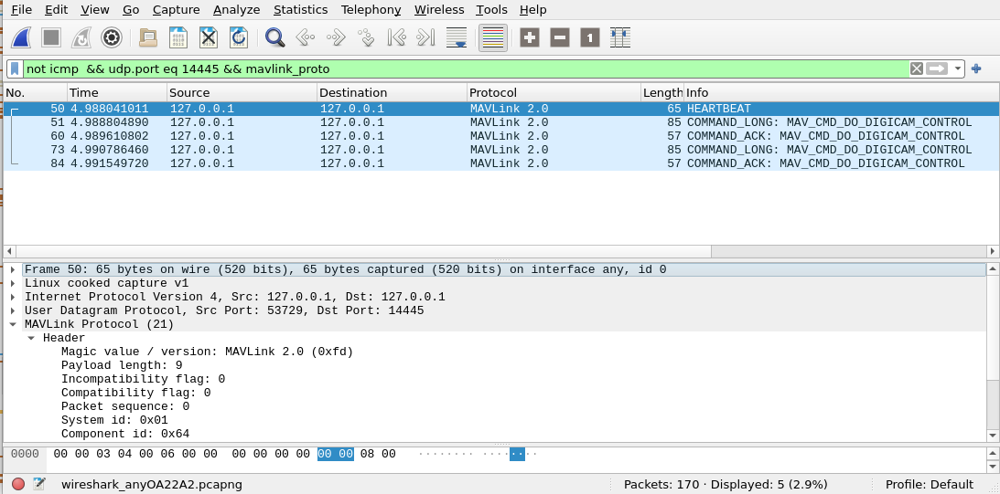

# logging.getLogger("uav").setLevel(logging.INFO)Mavlink MavCom
Mavlink base class for Client and server.
MAV_SYSTEM_GCS_CLIENT = 200 # GCS type client (TODO its not clear if this is correct, 255 = GCS)
MAV_TYPE_GCS = mavutil.mavlink.MAV_TYPE_GCS
MAV_SYSTEM_VEHICLE = 111 # 1 = vehicle
MAV_TYPE_CAMERA = mavutil.mavlink.MAV_TYPE_CAMERA
MAV_COMP_ID_CAMERA = mavutil.mavlink.MAV_COMP_ID_CAMERA
MAV_COMP_ID_USER1 = mavutil.mavlink.MAV_COMP_ID_USER1Component
Component (source_component:int, mav_type:int, loglevel:LogLevels|int=20)
Create a client component to send commands to a companion computer or GCS that will control a cameras via a CameraServer instance
| Type | Default | Details | |
|---|---|---|---|
| source_component | int | used for component indication | |
| mav_type | int | used for heartbeat MAV_TYPE indication | |
| loglevel | LogLevels | int | 20 | logging level |
MAVCom
MAVCom (connection_string:str, baudrate:int=57600, source_system:int=111, loglevel:LogLevels|int=20)
Mavlink Base to set up a mavlink_connection for send and receive messages to and from a remote system.
| Type | Default | Details | |
|---|---|---|---|
| connection_string | str | “udpin:localhost:14550” | |
| baudrate | int | 57600 | baud rate of the serial port |
| source_system | int | 111 | remote or air system 1 = vehicle |
| loglevel | LogLevels | int | 20 | logging level |
# show_doc(MavLinkBase)Test locally using UDP ports
Starting a client and server
on the same machine using UDP ports
14445withserver_system_ID=111, client_system_ID=222
Exported source
def test_MAVCom():
"""Test MAVCom with a client and server on the same machine using UDP ports `14445` with `server_system_ID=111, client_system_ID=222`"""
with MAVCom("udpin:localhost:14445", source_system=111, loglevel=LogLevels.DEBUG) as client:
with MAVCom("udpout:localhost:14445", source_system=222, loglevel=LogLevels.DEBUG) as server:
server.add_component(Component(server, mav_type=mavlink.MAV_TYPE_CAMERA, loglevel=LogLevels.DEBUG))
client.add_component(Component(client, mav_type=mavlink.MAV_TYPE_GCS, loglevel=LogLevels.DEBUG))
MAX_PINGS = 4
client.component[11].send_ping(222, 22, max_pings=MAX_PINGS)
time.sleep(0.5)
print(f"{server.source_system = }; {server.message_cnts = }")
print(f"{client.source_system = }; {client.message_cnts = }")
test_eq(server.message_cnts[111]['PING'], MAX_PINGS)
test_eq(server.message_cnts[111]['HEARTBEAT']>0, True)
test_eq(client.message_cnts[222]['PING'], MAX_PINGS)
test_eq(client.message_cnts[222]['HEARTBEAT']>0, True)
test_MAVCom()INFO |07.381| mavcom.MAVCom | mavcom.py :386 | Thread-17 | MainProces | MAVLink Mav2: True, source_system: 111
INFO |07.484| mavcom.MAVCom | mavcom.py :386 | Thread-18 | MainProces | MAVLink Mav2: True, source_system: 222
DEBUG|07.487| mavcom.Componen | basecompon:119 | MainThread | MainProces | set_mav_connection Component general.py:119 self.mav_com = <MAVCom>
DEBUG|07.489| mavcom.Componen | basecompon:165 | Thread-19 | MainProces | Starting heartbeat type: 30 to all Systems and Components
DEBUG|07.490| mavcom.Componen | basecompon:168 | Thread-19 | MainProces | Sent heartbeat 30 self.source_system = 222 self.source_component = <MAVCom>
Exception in thread Thread-19:
Traceback (most recent call last):
File "/usr/lib/python3.9/threading.py", line 980, in _bootstrap_inner
DEBUG|07.491| mavcom.Componen | basecompon:127 | MainThread | MainProces | Called from Component.start_mav_connection(), override to add startup behaviour
INFO |07.492| mavcom.Componen | basecompon:123 | MainThread | MainProces | Component Started self.source_component = <MAVCom>, self.mav_type = 30, self.source_system = 222
self.run()
File "/usr/lib/python3.9/threading.py", line 917, in run
DEBUG|07.494| mavcom.Componen | basecompon:119 | MainThread | MainProces | set_mav_connection Component general.py:119 self.mav_com = <MAVCom>
self._target(*self._args, **self._kwargs)
File "/home/john/PycharmProjects/mavcom/mavcom/mavlink/basecomponent.py", line 170, in _thread_send_heartbeat
DEBUG|07.496| mavcom.Componen | basecompon:165 | Thread-21 | MainProces | Starting heartbeat type: 6 to all Systems and Components
self.master.mav.heartbeat_send(
File "/home/john/PycharmProjects/mavcom/venv/lib/python3.9/site-packages/pymavlink/dialects/v20/ardupilotmega.py", line 30550, in heartbeat_send
DEBUG|07.501| mavcom.Componen | basecompon:127 | MainThread | MainProces | Called from Component.start_mav_connection(), override to add startup behaviour
self.send(self.heartbeat_encode(type, autopilot, base_mode, custom_mode, system_status, mavlink_version), force_mavlink1=force_mavlink1)
File "/home/john/PycharmProjects/mavcom/venv/lib/python3.9/site-packages/pymavlink/dialects/v20/ardupilotmega.py", line 20228, in send
DEBUG|07.501| mavcom.Componen | basecompon:168 | Thread-21 | MainProces | Sent heartbeat 6 self.source_system = 111 self.source_component = <MAVCom>
buf = mavmsg.pack(self, force_mavlink1=force_mavlink1)
File "/home/john/PycharmProjects/mavcom/venv/lib/python3.9/site-packages/pymavlink/dialects/v20/ardupilotmega.py", line 19808, in pack
return self._pack(mav, self.crc_extra, self.unpacker.pack(self.custom_mode, self.type, self.autopilot, self.base_mode, self.system_status, self.mavlink_version), force_mavlink1=force_mavlink1)
File "/home/john/PycharmProjects/mavcom/venv/lib/python3.9/site-packages/pymavlink/dialects/v20/ardupilotmega.py", line 272, in _pack
self._msgbuf = bytearray(self._header.pack(force_mavlink1=force_mavlink1))
File "/home/john/PycharmProjects/mavcom/venv/lib/python3.9/site-packages/pymavlink/dialects/v20/ardupilotmega.py", line 88, in pack
return struct.pack(
struct.error: required argument is not an integer
Exception in thread Thread-21:
Traceback (most recent call last):
File "/usr/lib/python3.9/threading.py", line 980, in _bootstrap_inner
INFO |07.508| mavcom.Componen | basecompon:123 | MainThread | MainProces | Component Started self.source_component = <MAVCom>, self.mav_type = 6, self.source_system = 111
self.run()
File "/usr/lib/python3.9/threading.py", line 917, in run
self._target(*self._args, **self._kwargs)
File "/home/john/PycharmProjects/mavcom/mavcom/mavlink/basecomponent.py", line 170, in _thread_send_heartbeat
self.master.mav.heartbeat_send(
File "/home/john/PycharmProjects/mavcom/venv/lib/python3.9/site-packages/pymavlink/dialects/v20/ardupilotmega.py", line 30550, in heartbeat_send
self.send(self.heartbeat_encode(type, autopilot, base_mode, custom_mode, system_status, mavlink_version), force_mavlink1=force_mavlink1)
File "/home/john/PycharmProjects/mavcom/venv/lib/python3.9/site-packages/pymavlink/dialects/v20/ardupilotmega.py", line 20228, in send
buf = mavmsg.pack(self, force_mavlink1=force_mavlink1)
File "/home/john/PycharmProjects/mavcom/venv/lib/python3.9/site-packages/pymavlink/dialects/v20/ardupilotmega.py", line 19808, in pack
return self._pack(mav, self.crc_extra, self.unpacker.pack(self.custom_mode, self.type, self.autopilot, self.base_mode, self.system_status, self.mavlink_version), force_mavlink1=force_mavlink1)
File "/home/john/PycharmProjects/mavcom/venv/lib/python3.9/site-packages/pymavlink/dialects/v20/ardupilotmega.py", line 272, in _pack
self._msgbuf = bytearray(self._header.pack(force_mavlink1=force_mavlink1))
File "/home/john/PycharmProjects/mavcom/venv/lib/python3.9/site-packages/pymavlink/dialects/v20/ardupilotmega.py", line 88, in pack
return struct.pack(
struct.error: required argument is not an integer
INFO |08.489| mavcom.Componen | basecompon:417 | MainThread | MainProces | Component closed (not waiting for _t_heartbeat daemon thread)
INFO |08.490| mavcom.MAVCom | mavcom.py :442 | MainThread | MainProces | MAVCom closed
INFO |09.387| mavcom.Componen | basecompon:417 | MainThread | MainProces | Component closed (not waiting for _t_heartbeat daemon thread)
INFO |09.389| mavcom.MAVCom | mavcom.py :442 | MainThread | MainProces | MAVCom closedKeyError: 11# assert False, "Stop here"This will show on wireshark as follows: > Using the display filte string not icmp && udp.port eq 14445 && mavlink_proto

For debugging help see http://localhost:3000/tutorials/mavlink_doc&debug.html and http://localhost:3000/tutorials/mavlink_doc&debug.html#debugging